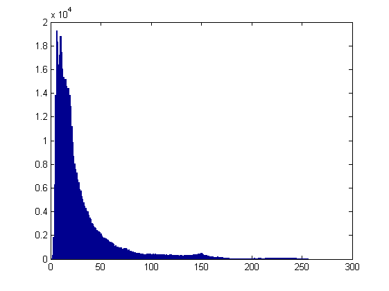
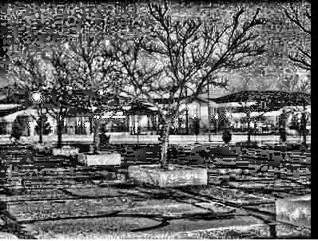
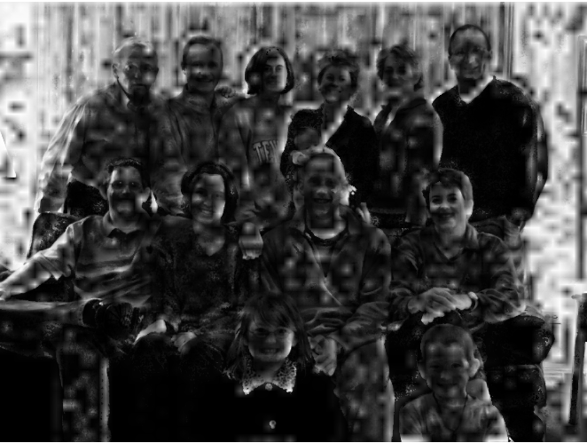
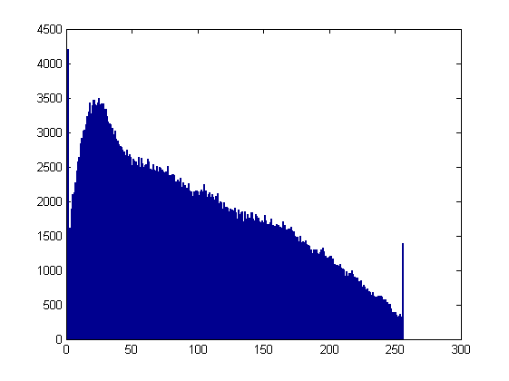

HOMEWORK 2
PRATEEP MUKHERJEE
prateepm@sci.utah.edu
HISTOGRAM EQUALIZATION
In the first experiment, we show histogram equalization for three different sets of images.
In each row below, we show the original image, histogram of the original image, histogram equalized image, and the
histogram transformation respectively.



Histogram equalization is shown for different sets of images. Here, we use the formula
Hf = alpha * Heq + (1-alpha) * Hi ,
where Hi is the identity transform and Heq is the transformation for histogram equalization.
From left to right, each row shows the original image, images with alpha = 0.4, 0.8 and 1.00 respectively.
Note that the rightmost image in each row is the original histogram equalized image.
Crowd
University
Ross

Lunch
ADAPTIVE HISTOGRAM EQUALIZATION
Adaptive Histogram Equalization was implemented in 3 ways. In the first case, the Sliding Window algorithm was
implemented. In the second case, we used the same algorithm. However, now we normalize the histogram values
within each window. In the third case, we implemented the Tiling approach. In each row below, we show 4 sets of
images. From left to right, they show the histogram equalization using 1st approach, 2nd approach with a 8x8 window,
3rd approach using 8x8 tiles and 256 bins, 3rd approach using 8x8 tiles using bilinear interpolation and 100 bins, and finally the 3rd approach
using a 20x20 tiles. In the interpolation approach, we compute the histogram equalizations of Upper Left(UL), Upper Right(UR), Down Left(DL) and Down Right(DR).
Next, we compute the bilateral interpolation of these values to compute the current histogram value.
In these examples, as we grow the window size the local grayscale distribution gets better.
However, when the window size gets bigger we get shadow artifacts as seen in the rightmost figures.
The average execution time for the 1st variant on these images is ~ 2 secs. For the 2nd variant, the average
execution time is ~ 3.2 secs. For the 3rd variant, the execution times were stretched to ~ 5-10 secs.
It can be seen in all the images, that as we use more variants of adaptive histogram equalization, the results
get better. However, this improvement in quality comes at the cost of increased execution time.
Crowd:
University:

Portal:
Ross:

CLAHE
The clipping value used is by default mean of the maximum histogram value. In this algorithm, we also implement
bilinear interpolation to interpolate the current window with the histogram of neighbour 3 windows.
As in AHE, we compute the histogram equalization using tiling method for Upper Left(UL), Upper Right(UR), Down Left(DL) and Down Right(DR).
Next, we compute the bilateral interpolation of these values to compute the current histogram value.
A drawback in this approach is that within the same window the pixels towards the left border are computed differently than pixels on the right border.
Crowd

University
Portal
Lunch